Model Matematika dalam Program Linear
Pengertian SPLDV
Sistem persamaan linear dua variabel (SPLDV) adalah pasangan dari dua nilai peubah x atau y yang
ekuivalen dengan bentuk umumnya yang mempunyai pasangan terurut (xo, yo). Bentuk umum dari SPLDV adalah sebagai berikut :
Sedangkan solusi dari hasil bentuk umum di atas disebut (xo,yo) disebut himpunan penyelesaiannya.
Contoh SPLDV adalah sebagai berikut :
Dan Himpunan Penyelesaiannya adalah {(x,y) (4,-1)}.
Metode Penyelesaian SPLDV
Ada beberapa metode untuk menyelesaikan SPLDV sehingga diperoleh nilai himpunan penyelesaiannya yaitu metode grafik, metode eliminasi dengan penyamaan,
metode eliminasi dengan substitusi, dan metode eliminasi dengan menjumlahkan atau mengurangkan. Setiap metode mempunyai keunggulan dan kelemahannya. Penjelasannya setiap metode SPLDV adalah sebagai berikut :
Metode Grafik
Metode grafik adalah menentukan titik potong antara dua persamaan garis sehingga di dapatkan himpunan penyelesaian dari persamaan linear dua variabel tersebut. Apabila diperoleh persamaan dua garis tersebut saling sejajar,
maka himpunan penyelesaiannya adalah himpunan kosong. Sedangkan jika garisnya saling berhimpit maka jumlah himpunan penyelesaiannya tak berhingga. Langkah-langkah penyelesaian menggunakan metode grafik adalah sebagai berikut :
- Gambarkan grafik garis ax + by = p dan cx + dy = q pada sebuah sistem koordinat Cartesius. Pada langkah ini, kita harus menentukan titik potong sumbu X dan titik potong sumbu Y nya yaitu titik
potong sumbu X saat y = 0 dan titik potong sumbu Y saat x = 0. Lalu kemudian hubungan kedua titik potong tersebut sehingga diperoleh garis persamaan.
- Tentukan koordinat titik potong kedua garis ax + by = p dan cx + dy = q (jika ada).
- Tuliskan himpunan penyelesainnya.
Tentukan himpunan penyelesaian dibawah ini menggunakan metode grafik.
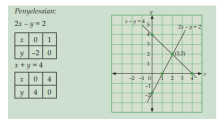
Titik potong kedua garis yang diperoleh adalah (2,2). Jadi himpunan penyelesaiannya dari sistem persamaan tersebut adalah (2,2).
Tentukan himpunan penyelesaian dari sistem di bawah ini menggunakan metode grafik :
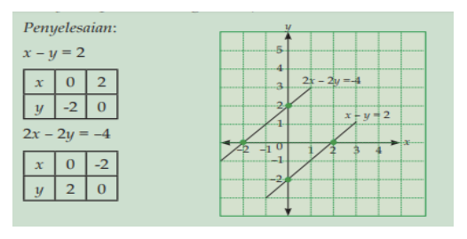
Kedua garis yang dihasilkan ternyata saling sejajar, oleh sebab itu tidak ada titik potong yang di hasilkan. Jadi himpunan penyelesaiannya adalah himpunan kosong { } .
Keunggulan dari metode grafik adalah kita dapat menentukan himpunan penyelesaiannya secara visual. Artinya hasilnya dapat diketahui secara langsung sekali lihat.
Kelemahan dari metode grafik adalah tidak efektif untuk menyelesaikan soal untuk aplikasi SPLDV, tidak baik apabila angka yang ada pada persamaan linear dua variabel
berbentuk desimal karena kelihatan tidak presisi pada media grafiknya.
Metode Eliminasi dengan Penyamaan
Misalkan kita mempunyai SPLDV dalam variabel x dan y. Andaikan kita membuat suatu persamaan yang tidak lagi mengandung nilai x nya, maka dikatakan bahwa x telah dieliminasikan dengan penyamaan.
Langkah strateginya adalah dengan mencari nilai x dari kedua persamaan yang diberikan itu (nilai y seolah-olah dianggap sebagai bilangan yang diketahui, maka dikatakan bahwa x dinyatakan dalam y).
Kemudian hasil yang didapat dipersamakan. Dalam kasus ini kita juga dapat menyatakan nilai y ke dalam x, kemudian kita samakan dari persamaan-persamaan itu. Contohnya sebagai berikut :
Carilah himpunan penyelesaian dari SPLDV berikut ini :
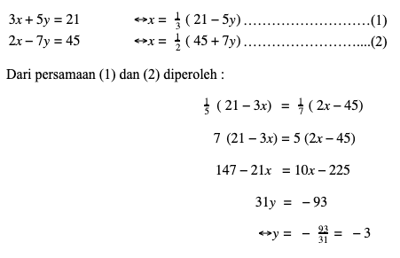
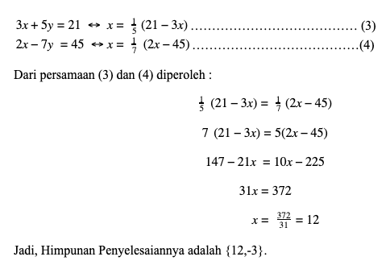
Jadi, Himpunan Penyelesaiannya adalah {12,-3}.
Kelemahan dari metode eliminasi dengan penyamaan adalah akan memerlukan banyak langkah (dapat sampai 4 langkah),
karena misalnya salah satu variabel yang diketahui tidak langsung disubstitusi ke persamaan, namun dicari variabel yang lain menggunakan eliminasi sehingga rawan akan ketidaktelitian saat menghitung.
Metode Eliminasi dengan Substitusi
Apabila kita mempunyai SPLDV dalam variabel x dan y. langkah-langkah penyelesaian metode Eliminasi dengan Substitusi adalah sebagai berikut :
- Pilihlah salah satu persamaan yang sederhana, kemudian nyatakan y dalam x atau x dalam y.
- Substitusikan x atau y yang diperoleh pada langkah 1 ke dalam persamaan lainnya.
- Selesaikan persamaan yang diperoleh pada langkah 2.
- Tuliskan himpunan penyelesainnya.
Contoh soal: Metode Eliminasi dengan Substitusi
Carilah himpunan penyelesaian dari SPLDV berikut ini :
Langkah 1 : nyatakan ke dalam variabel y
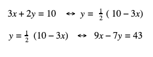
Langkah 1 : selesaikan nilai x dan y
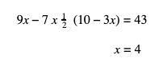
Langkah 3 : substitusikan nilai x dan y ke dalam persamaan :
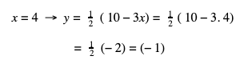
Jadi, Himpunan penyelesaiannya adalah {4, -1}.
Keunggulan Metode Eliminasi dengan Substitusi adalah sangat mudah digunakan dan efektif
untuk menyelesaikan soal SPLDV secara cepat dan tepat. Kelemahan dari metode ini adalah tidak
disarankan apabila digunakan untuk masalah persamaan linear yang kompleks seperti sistem persamaan linear 3 variabel.
Metode Gabungan Eliminasi Menjumlahkan atau mengurangkan dan Substitusi
Apabila kita mempunyai Sistem Persamaan linear dua variabel ke dalam variabel x dan y. langkah-langkah untuk menyelesaikan SPLDV ini adalah sebagai berikut :
- Tentukan nilai x atau y menggunakan metode eliminasi dengan menjumlahkan atau mengurangkan.
- Substitusikan nilai x atau y yang diperoleh pada langkah 1 ke salah satu persamaan yang diperoleh dan selesaikanlah persamaan itu.
- Tuliskan himpunan penyelesainnya.
Carilah Himpunan penyelesaian dari SPLDV berikut ini :
4 (x-1) + y = 5x – 3y + 6
Jabarkan persamaan di atas terlebih dahulu sehingga didapat persamaan yang sederhana :
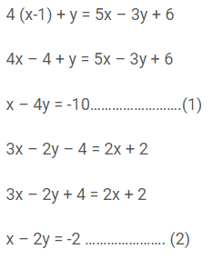
Langkah 1 : Tentukan nilai x dan y menggunakan metode eliminasi dan substitusi :
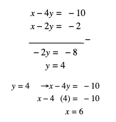
Jadi, himpunan penyelesaiannya adalah {6,-2}.
Keunggulan dari Metode ini adalah mudah digunakan, dapat digunakan untuk menyelesaikan soal aplikasi
SPLDV dalam kehidupan sehari-hari, dan juga relevan apabila digunakan untuk permasalahan linear yang kompleks seperti sistem persamaan linear 3 variabel.
Pengertian SPtLDV
Sistem Pertidaksamaan Linear Dua Variabel (SPtLDV) merupakan suatu kalimat terbuka matematika yang di dalamnya memuat dua variabel.
Dengan masing-masing variabel berderajat satu serta dihubungkan dengan tanda ketidaksamaan. Tanda ketidaksamaan yang dimaksud disini antara lain: >, <, ≤, atau ≥.\
Maka, bentuk dari pertidaksamaan linear bisa kita tuliskan seperti berikut ini:
- ax + by > c
- ax + by < c
- ax + by ≥ c
- ax + by ≤ c
Berikut ini adalah contoh dari kalimat matematikanya:
Beberapa kalimat terbuka di atas menggunakan tanda hubung seperti <, >, > atau <. Yang menandakan kalimat tersebut merupakan pertidaksamaan.
Berbeda halnya dengan penyelesaian dari persamaan linear dua variabel yang berwujud himpunan pasangan titik-titik. Atau apabila kita gambar grafiknya akan berupa garis lurus.
Penyelesaian dari pertidaksamaan linear dua variabel berupa daerah penyelesaian.
Dalam praktiknya penyelesaian pertidaksamaan linear bisa berwujud daerah diarsir atau sebaliknya daerah penyelesaian pertidaksamaan linear dua variabel yang berupa daerah bersih.
Untuk menentukkan daerah penyelesaiannya, kita bisa melakukan langkah-langkah seperti di bawah ini:
- Ubahlah tanda ketidaksamaan dari pertidaksamaan menjadi tanda sama dengan (=), sehingga kita akan memperoleh persamaan linear dua variabel
- Gambar dari grafikatau garis dari persamaan linear dua variabel tadi.
Hal ini bisa kita lakukan dengan cara menentukan titik potong sumbu x dan sumbu y dari persamaan.
Ataupun dapat memakai dua titik sembarang yang dilewati oleh garis. Garis akan membagi dua bidang kartesius
-
Lakukan uji titik yang tidak dilewati oleh garis (substitusi nilai x dan y titik ke pertidaksamaan). Apabila menghasilkan pernyataan yang benar, artinya daerah tersebut adalah penyelesaiannya.
Tetapi, jika menghasilkan pernyataan salah maka bagian lainnya lah yang merupakan penyelesaiaanya.
Pertidaksamaan linear merupakan pertidaksamaan yang mana peubah bebasnya berbentuk linear (pangkat satu).
Kalian tentunya masih ingatkan beberapa kalimat matematika di bawah ini.
- 2x ≥ 4; pertidaksamaan linear satu peubah
- 3x + y < 0; pertidaksamaan linear dua peubah
- x – 2y ≤ 3; pertidaksamaan linear dua peubah
- x + y – 2z > 0; pertidaksamaan linear tiga peubah
Gabungan dari dua atau lebih pertidaksamaan linear dua peubah disebut sebagai sistem pertidaksamaan linear dua peubah.
Daerah Himpunan Penyelesaian Pertidaksamaan Linear Dua Peubah
Penyelesaian suatu pertidaksamaan linear dua peubah merupakan pasangan berurut (x,y) yang dapat memenuhi pertidaksamaan linear tersebut.
Himpunan dari penyelesaian tersebut dapat dinyatakan dengan sebuah daerah pada bidang kartesius (bidang XOY) yang diarsir.
Untuk lebih memahami daerah himpunan dari penyelesaian pertidaksamaan linear dua peubah. Berikut akan kami berikan contohnya:
Tentukan himpunan penyelesaian dari pertidaksamaan linear di bawah ini:
- 2x + 3y ≥ 12
- 2x – 5y > 20
- 4x – 3y < 12
- 5x + 3y ≤ 15
- Langkah pertama adala lukis garis 2x + 3y = 12 dengan cara menghubungkan titik potong garis dengan sumbu X dan sumbu Y.
Titik potong garis dengan sumbu X memilki arti sebagai y = 0, dan didapatkan x = 6 (titik (6,0)).
Titik potong garis dengan sumbu Y artinya x = 0, didapat y = 4 (titik (0,4)).
Garis 2x + 3y = 12 tersebut kemudian akan membagi bidang kartesius menjadi dua bagian.
Untuk menentukan daerah yang mana adalah himpunan penyelesaian, maka dilakukan dengan mengambil salah satu titik uji dari salah satu sisi daerah.
Sebagai contoh disini kita ambil titik (0,0). Lalu disubstitusikan ke pertidaksamaan sehingga akan kita peroleh:
Sehingga, 0 ≥ 12 salah, yang berarti tidak dipenuhi sebagai daerah penyelesaian.
Jadi, daerah penyelesaiannya yaitu daerah yang tidak masuk dalam titik (0,0). Yakni daerah yang diarsir pada gambar di bawah ini:
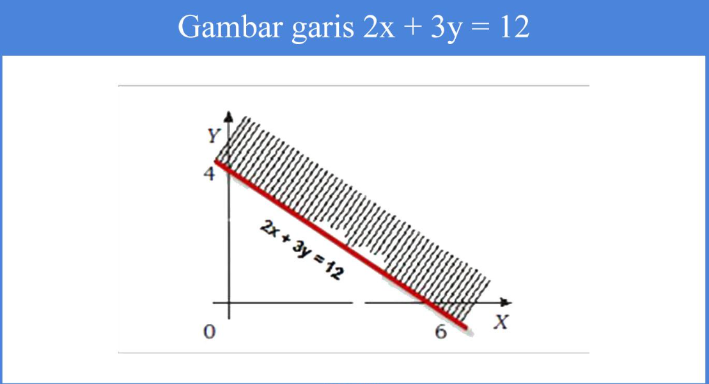
- Langkah kedua adalah menggambar garis 2x – 5y = 20 dengan cara menghubungkan titik potong garis di sumbu X dan sumbu Y.
- Titik potong garis dengan sumbu X, y = 0, didapat x = 10 (titik (10,0))
- Titik potong garis dengan sumbu Y, x = 0, didapat y = –4 (titik (0,–4))
Garis 2x – 5y = 20 tersebut akan membagi bidang kartesius menjadi dua bagian. Untuk menentukan daerah yang mana adalah himpunan penyelesaian.
Maka kita akan melakukannya dengan cara mengambil titik uji pada salah satu sisi daerah.
Sebagai contoh kita ambil titik (0,0). Lalu kita substitusikan ke pertidaksamaan sehingga akan kita peroleh:
0 > 20 (salah), artinya tidak dipenuhi.
Sehingga, daerah penyelesaiannya yaitu daerah yang tidak masuk dalam titik (0,0).
Yakni daerah yang diarsir pada gambar di bawah ini:
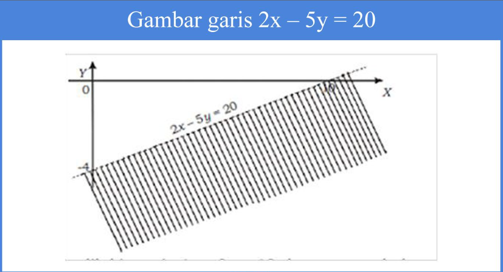
- Langkah pertama adalah menggambar garis 4x – 3y = 12 dengan cara menghubungkan titik potong garis pada sumbu X dan sumbu Y.
- Titik potong garis dengan sumbu X maka y = 0 didapat x = 3 (titik (3,0))
- Titik potong garis dengan sumbu Y maka x = 0 didapat y = –4 (titik (0,–4))
Garis 4x – 3y = 12 tersebut akan membagi bidang kartesius menjadi dua bagian.
Untuk menentukan daerah yang mana adalah himpunan penyelesaian.
Maka kita akan melakukannya dengan cara mengambil salah satu titik uji dari salah satu sisi daerah.
Sebagai contoh kita ambil titik (0,0). Lalu kita substitusikan ke pertidaksamaan sehingga akan kita peroleh:
0 < 12 (benar), yang berarti dipenuhi sebagai daerah penyelesaian.
Sehingga, daerah penyelesaiannya yaitu daerah yang terdapat atau memuat titik (0,0). Yakni daerah yang diarsir pada gambar di bawah ini:
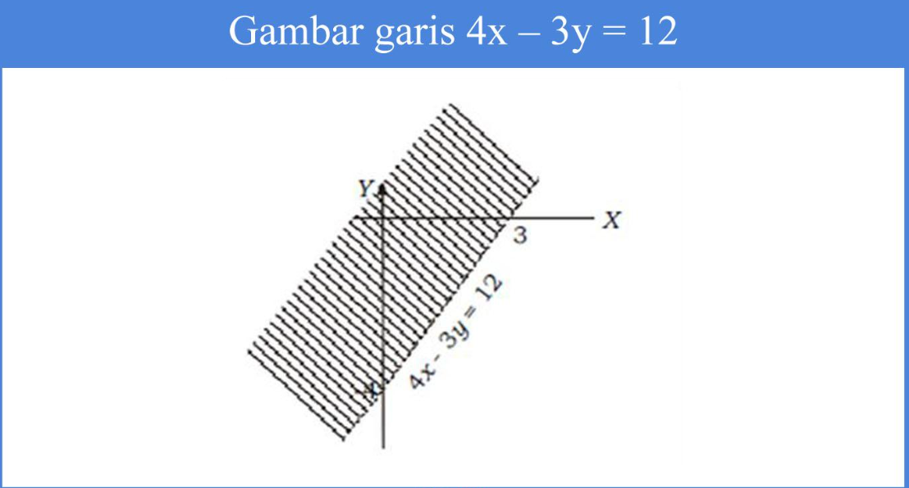
- Langkah pertama adalah menggambar garis 5x + 3y = 15 dengan cara menghubungkan titik potong garis pada sumbu X dan sumbu Y.
- Titik potong garis dengan sumbu X maka y = 0 didapat x = 3 (titik (3,0))
- Titik potong garis dengan sumbu Y maka x = 0, didapat y = 5 (titik (0,5))
Garis 5x + 3y = 15 tersebut membagi bidang kartesius menjadi dua bagian.
Untuk menentukan daerah yang mana adalah himpunan penyelesaian. Maka kita akan melakukannya dengan cara mengambil salah satu titik uji dari salah satu sisi daerah.
Sebagai contoh kita ambil titik (0,0). Lalu kita substitusikan ke pertidaksamaan sehingga akan kita peroleh:
0 ≤ 15 (benar), artinya dipenuhi.
Sehingga, daerah penyelesaiannya yaitu daerah yang terdapat atau memuat titik (0,0). Yakni daerah yang diarsir pada gambar di bawah ini::
- Menggambar garis ax + by = c dalam bidang kartesius dengan cara menghubungkan titik potong garis pada sumbu X di titik (c/a ,0) serta pada sumbu Y di titik (0,c/b ).
- Kita cari tahu sebuah titik uji yang berada di luar garis dengan cara menyubstitusikannya pada pertidaksamaan.
Apabila pertidaksamaan mampu terpenuhi (benar), maka daerah yang memuat titik tersebut adalah daerah himpunan penyelesaian.
Apabila pertidaksamaan tidak dipenuhi (salah), maka daerah yang tidak terdapat pada titik uji tersebut adalah daerah himpunan penyelesaian.